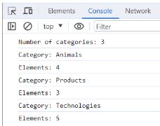

Повернутись до змісту
Завдання №7
HTML містить список категорій ul#categories.
-
Animals
-
Products
-
Technologies
- HTML
- CSS
- JavaScript
- React
- Node.js
Написати скрипт, який:
1) Порахує і виведе в консоль кількість категорій в ul#categories, тобто елементів li.item.
2) Для кожного элемента li.item у списку ul#categories, знайде і виведе в консоль текст заголовку елемента (тегу <h2>) і кількість елементів в категорії (усіх <li>, вкладених в нього).
Для виконання цього завдання потрібно використати метод forEach() і властивості навігації по DOM.
В результаті, в консолі будуть виведені наступні повідомлення.
